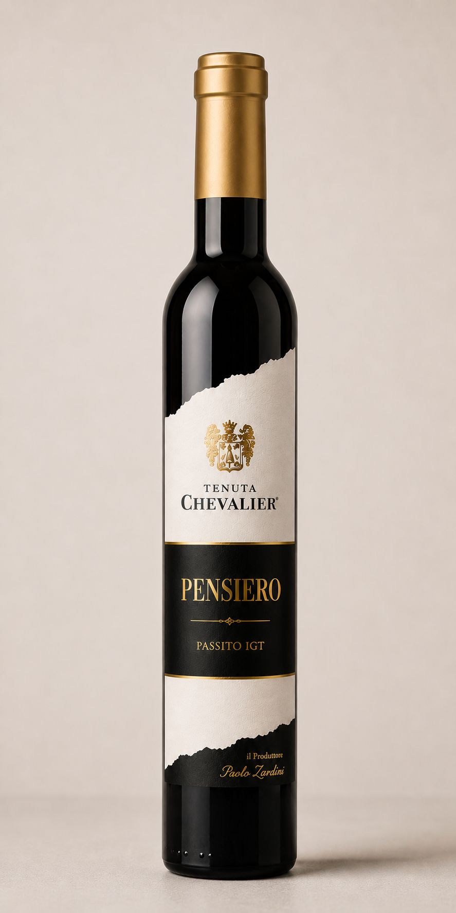

Valpolicella Classico DOC
Fresh and fragrant, with a dry, approachable profile. Made from late-harvest grapes, it balances light body, lively acidity, and fruity notes.

Valpolicella Classico Superiore DOC
From carefully selected grapes, it shows a ruby profile and gently spiced aromatics. On the palate it is harmonious and velvety, with a balanced play of freshness, fruit, and tannin.

Valpolicella Ripasso Classico Superiore DOC
Velvety and well-structured, with fruity aromas and a refreshing lift. The sip is full and balanced, featuring elegant tannins and a long finish.

Amarone della Valpolicella Classico DOCG
Intense and enveloping, with a rich, persistent character. Ripe fruit and spices meet an elegant structure and a distinctive long finish.

Rocchetto IGT Corvina in Purezza 100%
100% Corvina with a full, lightly spicy expression and bright intensity. Warm and decisive on the palate, it stays balanced with a fruit-driven finish.

Recioto della Valpolicella Classico DOC
Harmonious sweetness with great depth: rich and velvety, with fruit-forward aromas. Ideal for a soft, persistent finish full of nuances.

Pensiero IGT Passito Bianco
White wine from dried grapes: expressive, bright, and gently floral. Soft and enveloping on the palate, with a pleasant freshness and a long persistence.